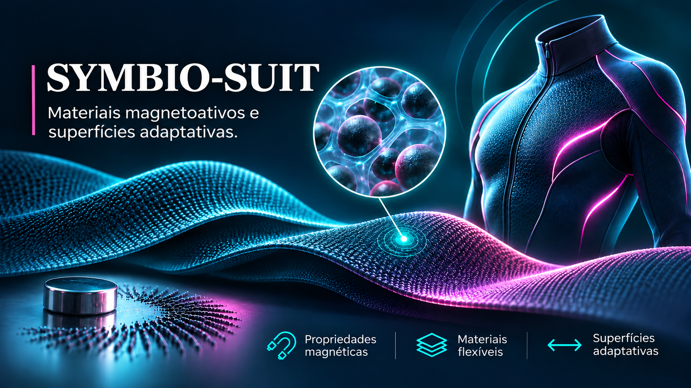

Pesquisa teórica · Ciência dos Materiais
SYMBIO-SUIT
Investigação teórica sobre compósitos poliméricos magnetoativos e suas possíveis aplicações em materiais flexíveis e superfícies adaptativas.
Estudo bibliográfico Consultar pesquisaPORTFÓLIO DE PROJETOS
Dados • Tecnologia • Negócios • Robótica • Pesquisa
Um acervo multidisciplinar com projetos acadêmicos, tecnologia, gestão, finanças, programação, robótica, empreendedorismo e pesquisas. Cada trabalho apresenta seu contexto e documentação disponível.
EXPLORAR
Selecione uma categoria ou pesquise por palavras-chave no catálogo abaixo.
Três projetos que representam minhas principais frentes de pesquisa e desenvolvimento.
Nenhum projeto encontrado. Experimente outra busca ou categoria.
Os registros distinguem projetos acadêmicos, experiências profissionais, protótipos e iniciativas em desenvolvimento.
PESQUISA · EXPERIMENTAÇÃO · INOVAÇÃO
Um espaço para explorar pesquisas, estudos acadêmicos e propostas de inovação. Conheça os processos, as ideias e os conhecimentos por trás de cada projeto.

Pesquisa teórica · Ciência dos Materiais
Investigação teórica sobre compósitos poliméricos magnetoativos e suas possíveis aplicações em materiais flexíveis e superfícies adaptativas.
Estudo bibliográfico Consultar pesquisaExplicabilidade e Teoria dos Jogos Cooperativos.
Análise acadêmica
Resenha crítica sobre métodos de explicabilidade de modelos preditivos, valores de Shapley e interpretação de decisões em inteligência artificial.
Resenha crítica Ler resenha
Hackathon · Grupo Petrópolis 2026
Projeto de inovação desenvolvido pela equipe Código Malte, reunindo pesquisa de mercado, design de embalagem, experiência do consumidor, tecnologia e estratégia de posicionamento premium.
Proposta conceitual em equipe Explorar projeto
Ferramenta interativa · Finanças & Dados
Plataforma para importar arquivos Excel e CSV, analisar movimentações financeiras, gerar dashboards, visualizar indicadores e simular cenários para apoiar decisões.
Aplicação web interativa Abrir laboratório